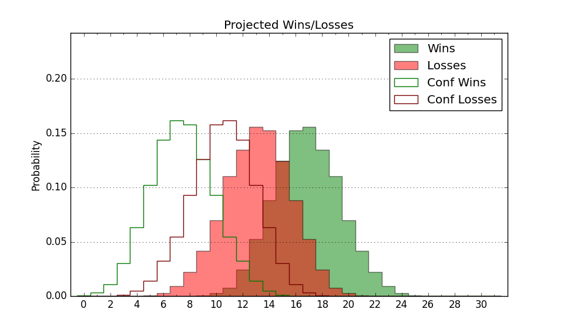

| Home | Game Probabilities | Conferences | Preseason Predictions | Odds Charts | NCAA Tournament |
| City: | Ames, Iowa | |
| Conference: | Big 12 (1st)
| |
| Record: | 0-0 (Conf) 9-2 (Overall) | |
| Ratings: | Comp.: 16.0 (42nd) Net: 17.0 (45th) Off: 101.3 (174th) Def: 84.3 (7th) SoR: 79.1 (24th) |
| Remaining | ||||||
|---|---|---|---|---|---|---|
| Date | Opponent | Win Prob | Pred. | |||
| 12/31 | Baylor (15) | 48.9% | L 64-65 | |||
| 1/4 | @ Oklahoma (32) | 31.1% | L 57-62 | |||
| 1/7 | @ TCU (53) | 38.0% | L 59-63 | |||
| 1/10 | Texas Tech (23) | 56.0% | W 62-61 | |||
| 1/14 | @ Kansas (5) | 15.4% | L 58-70 | |||
| 1/17 | Texas (10) | 44.4% | L 60-61 | |||
| 1/21 | @ Oklahoma St. (27) | 28.5% | L 57-63 | |||
| 1/24 | Kansas St. (54) | 67.7% | W 64-59 | |||
| 1/28 | @ Missouri (58) | 39.6% | L 68-71 | |||
| 1/30 | @ Texas Tech (23) | 27.2% | L 58-65 | |||
| 2/4 | Kansas (5) | 38.3% | L 63-66 | |||
| 2/8 | @ West Virginia (20) | 25.3% | L 60-68 | |||
| 2/11 | Oklahoma St. (27) | 57.6% | W 61-59 | |||
| 2/15 | TCU (53) | 67.6% | W 63-58 | |||
| 2/18 | @ Kansas St. (54) | 38.1% | L 60-63 | |||
| 2/21 | @ Texas (10) | 19.0% | L 56-65 | |||
| 2/25 | Oklahoma (32) | 60.6% | W 61-58 | |||
| 2/27 | West Virginia (20) | 53.6% | W 64-63 | |||
| 3/4 | @ Baylor (15) | 22.0% | L 60-69 | |||
| Previous | Game Score | |||||
| Date | Opponent | Win Prob | Result | Off | Def | Net |
| 11/7 | IUPUI (362) | 99.3% | W 88-39 | 3.5 | 12.2 | 15.6 |
| 11/13 | North Carolina A&T (274) | 95.6% | W 80-43 | 7.8 | 13.3 | 21.1 |
| 11/20 | Milwaukee (237) | 94.2% | W 68-53 | -10.8 | 1.8 | -9.0 |
| 11/24 | (N) Villanova (56) | 54.2% | W 81-79 | 4.7 | -3.3 | 1.4 |
| 11/25 | (N) North Carolina (16) | 36.8% | W 70-65 | 11.9 | 0.3 | 12.2 |
| 11/27 | (N) Connecticut (2) | 15.3% | L 53-71 | 1.1 | -10.1 | -9.0 |
| 11/30 | North Dakota (291) | 96.3% | W 63-44 | -9.4 | 5.5 | -3.9 |
| 12/4 | St. John's (98) | 81.7% | W 71-60 | -1.2 | 4.5 | 3.3 |
| 12/8 | @Iowa (37) | 33.2% | L 56-75 | -13.7 | -8.3 | -22.0 |
| 12/11 | McNeese St. (343) | 98.2% | W 77-40 | 1.5 | 12.4 | 13.9 |
| 12/18 | Western Michigan (333) | 97.7% | W 73-57 | 5.7 | -17.9 | -12.2 |
| Stats & Trends | |||||
|---|---|---|---|---|---|
| Current | Day | Week | Month | Season | |
| Composite | 16.0 | +0.0 | -0.2 | -0.2 | +3.3 |
| Comp Rank | 42 | -- | +3 | -2 | +17 |
| Net Efficiency | 17.0 | +0.0 | -0.3 | -4.3 | -- |
| Net Rank | 45 | -- | +2 | -12 | -- |
| Off Efficiency | 101.3 | +0.0 | -0.0 | -0.2 | -- |
| Off Rank | 174 | +5 | +8 | -13 | -- |
| Def Efficiency | 84.3 | -0.0 | -0.3 | -4.1 | -- |
| Def Rank | 7 | +1 | +2 | +3 | -- |
| SoS Rank | 271 | +1 | -11 | -1 | -- |
| Exp. Wins | 16.9 | -0.0 | -1.1 | -1.5 | +1.5 |
| Exp. Conf Wins | 7.5 | -0.0 | -0.1 | -0.2 | +0.9 |
| Conf Champ Prob | 2.8 | +0.0 | -0.1 | +0.1 | +1.1 |

| Advanced Stats | ||
|---|---|---|
| Stat | Value | Rank |
| Off Eff FG % | 0.506 | 153 |
| Off Ast Ratio | 0.168 | 41 |
| Off ORB% | 0.330 | 40 |
| Off TO Rate | 0.168 | 227 |
| Off FT Ratio | 0.274 | 262 |
| Def Eff FG % | 0.451 | 44 |
| Def Ast Ratio | 0.122 | 48 |
| Def ORB% | 0.276 | 210 |
| Def TO Rate | 0.265 | 1 |
| Def FT Ratio | 0.374 | 301 |